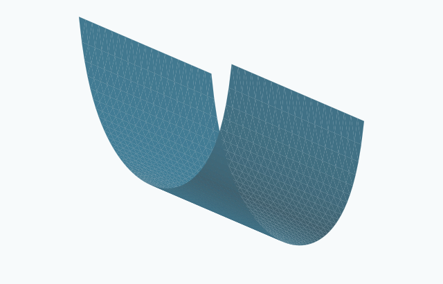

This is a complete, properly embedded noncompact surface diffeomorphic to $\mathbb R^2$. It has zero Gauss curvature and is invariant under translation in the direction $(0,1,a)$.
Its horizontal graph domain is a strip of width $\pi \sqrt{1+a^2}$. The case $a=0$ is the ordinary grim-reaper cylinder. The underlying surface is a rotation and dilation of that cylinder.
At a fixed width greater than $\pi $, the two signs of $a$ give the two opposite tilts. Translation in a tangent invariant direction does not change the evolving image.
Products with Euclidean factors give higher-dimensional translators. Graphical weighted stability holds, as in the preceding example.
See [HIMWGraphical18], equation (1.4), PDF page 3, with exchanged horizontal coordinates and reflected vertical direction. These cylinders must be distinguished from the strictly convex $\Delta $-wings on strips of the same width.

Drag to rotate. Use the zoom buttons, or focus the drawing and use arrow keys and + / −.
Exact formula. Exact tilted grim-reaper formula, with the infinite ends clipped. The displayed tilt parameter is a = 0.65. Open drawingAmbient space, topology, embeddedness and entropyPlane ℝ² · Euclidean space ℝ³ · Embedded
Ambient space
Euclidean space ℝ³
Topology
Plane ℝ²
Embeddedness
Embedded: The tilted graph and its stated Euclidean products are properly embedded.
Compactness
Noncompact
Surface genus
0
Topological ends
1
Entropy
Not recorded: Not recorded in this entry.
Gaussian area
Not recorded: Not recorded in this entry.
Products in higher dimensions · Euclidean space ℝ⁴; Euclidean dimension ≥ 5 · Embedded
Ambient space
Euclidean space ℝ⁴; Euclidean dimension ≥ 5
Topology
Euclidean products, topology ℝⁿ
Embeddedness
Embedded: The tilted graph and its stated Euclidean products are properly embedded.
[HIMWGraphical18] David Hoffman, Tom Ilmanen, Francisco Martín, and Brian White.
Graphical translators for mean curvature flow.
2018.
Supplied 28-page preprint dated July 5, 2018. Catalogue locators refer to this edition. The inverted ratio in Theorem 2.4 is corrected using equation (1.4).
URL: https://arxiv.org/abs/1805.10860v2.All uses in this project↩ 1

Comments
Comments are not enabled yet.